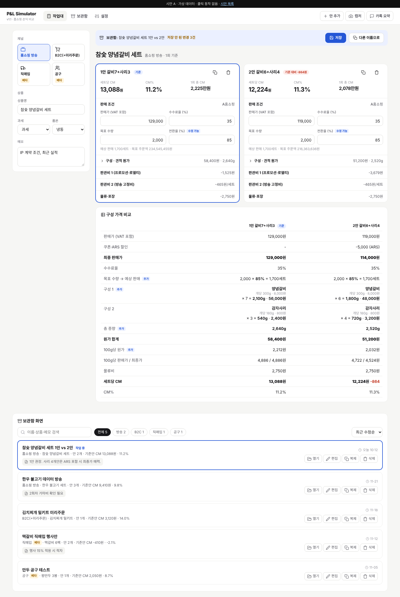
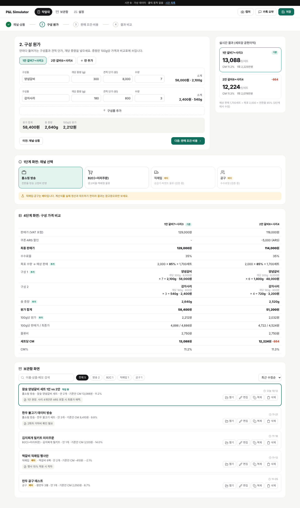
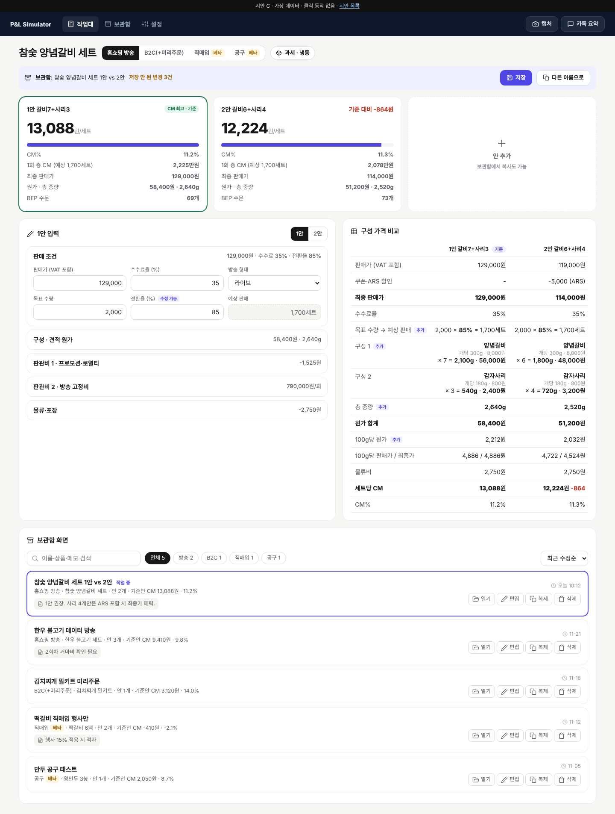
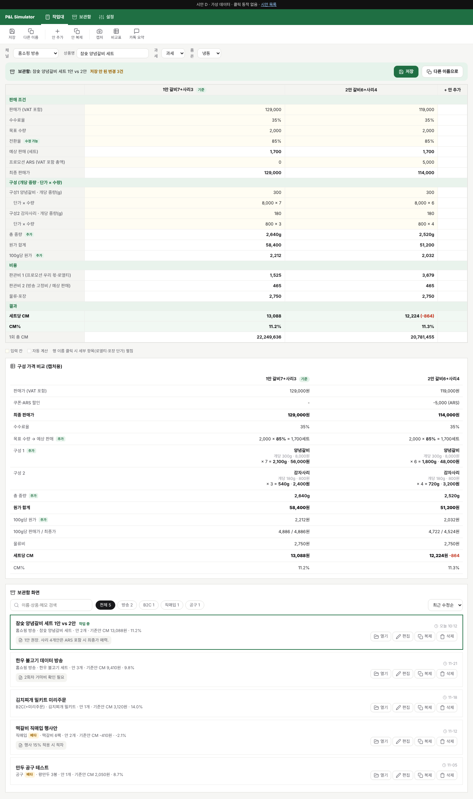
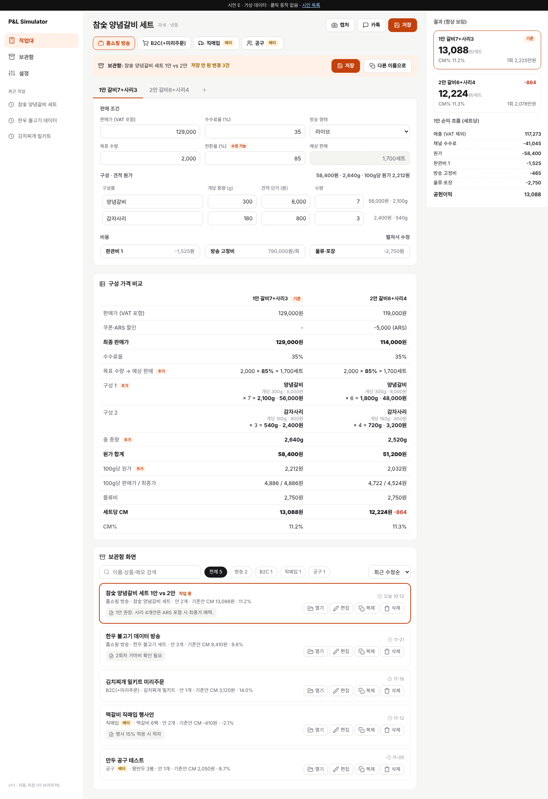

가상 데이터로 만든 정적 화면입니다(버튼은 동작하지 않음). 모든 시안에 공통 개선(베타 표시, 전환율 입력, 구성표 중량, 보관함 편집)이 들어 있습니다.

지금 구조(왼쪽 정보 + 안 카드 + 비교표)를 유지하고 색·간격·아이콘·글자 위계만 정리. 익숙함 유지, 개발 위험 가장 낮음.

채널·상품 → 구성 원가 → 판매 조건·비용 → 결과 비교, 4단계 안내. 처음 쓰는 사람에게 가장 쉬움. 숙련자는 단계 이동이 번거로울 수 있음.

맨 위에 안별 결과(CM·1회 총 CM·BEP)를 크게, 입력은 아래 접이식. 보고·의사결정용 화면에 강함.

안을 열로 놓고 입력·결과를 한 표에서. 엑셀에 익숙한 팀에 빠름. 화면 밀도가 높아 첫 진입 부담은 남음.

왼쪽 메뉴 + 가운데 안 탭 입력 + 오른쪽 결과 고정. 최근 작업 바로가기. 넓은 화면에서 가장 쾌적, 모바일은 세로로 쌓임.